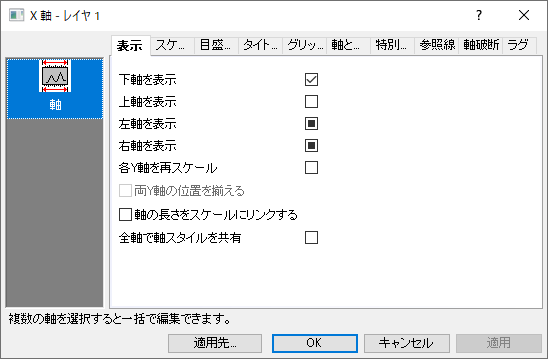
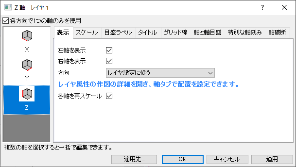
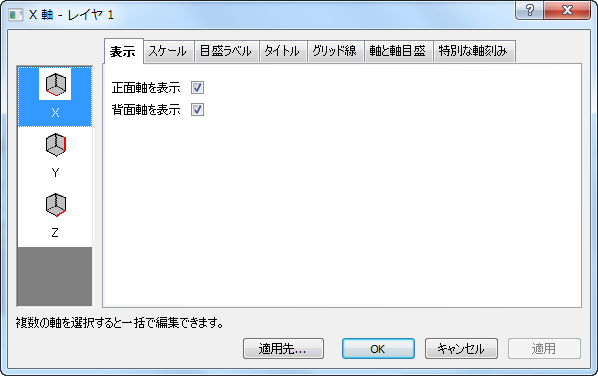

このタブは、指定した軸の表示/非表示や軸の位置を決定します。
| 一般的な2Dグラフ |
|---|
|  |
| 一般的な3Dグラフ |
|  |
| 2Dウォーターフォールグラフとターナリーグラフ |
|  |
現在の方向でどの軸を表示するか指定します。左と右軸または下と上軸を両方選択できます。
垂直方向の軸を個別に再スケールするには、このオプションを選択します。選択すると、左右のY軸は独立します。 左側のパネルで右軸および左軸アイコンを選択し、スケールタブ、グリッド線タブ、参照線タブ、軸破断タブに移動して軸要素をそれぞれ編集することができます。
Note: 作図の詳細ダイアログの表示タブにあるデータをプロットするを右Y軸に設定すると、Y軸を表示、X軸を表示、各Y軸を再スケールの3つのオプションにチェックが付きます。
このオプションを選択し、コンボボックスに垂直位置の値を入力すると、その垂直位置に左右のY軸が並ぶように右Y軸のスケールが変更されます。右のY軸は、従属プロットの全範囲を表示するように再スケールされます。
レイヤサイズを変更しても、XとYのスケールの縦横比を変えないようにするために、このオプションを選択してX軸とY軸の長さ（レイヤの「幅」と「高さ」）の比率を設定します。チェックすると、編集ボックスに比率の値を入力できます。
破断を持つ軸がある場合は、このチェックボックスは非表示になります。
このオプションは、作図の詳細ダイアログのレイヤの大きさタブの同じオプションと同期されます。詳細はこのドキュメントを参照してください。
全軸で軸スケールを共有を選択すると、スケールタブの設定がX・Y軸で共有されます。
全軸で軸スタイルを共有を選択すると、軸のスタイルの設定が同一レイヤ内の全ての軸で共有されます。次の軸スタイルが共有されます。
各方向で1つの軸のみを使用にチェックが付いている場合、軸を表示ドロップダウンリストが表示され、この中からどの軸を表示するか、あるいは表示しないかを選択できます。
各方向で1つの軸のみを使用のチェックを外した場合は、正面/背面または下軸/上軸、右軸/左軸を表示のチェックボックスが表示されます。このチェックボックスで軸の表示/非表示を指定します。選択された軸は目盛ラベルやタイトル、軸と軸目盛、特別な軸刻みタブでも表示され、それらの軸の表示を編集することができます。
Note: 3DグラフのZh軸について、各方向で1つの軸のみを使用のチェックを外すと、 ZhX/ZhY/ZhZ軸を表示の3つのチェックボックスが表示されます。
このドロップダウンリストを使って選択した軸の軸目盛ラベル、タイトル、目盛などの方向を設定します。全ての軸をグローバルに設定するには、ダイアログのヒントの指示に従って、作図の詳細ダイアログ（レイヤレベル）の軸タブに移動します。
各オプションの説明については、軸タブのOriginヘルプを参照してください。
XYZプロットでは、各Z軸を個別に再スケールできます。XYYプロットでは、各Y軸を個別に再スケールできます。このチェックボックスにチェックを入れると、2つのZ/Y軸はスケールタブに表示され、同じ3Dレイヤに2つの異なる3Dプロットを追加でき、それぞれのZ/Y軸の範囲で表示することができます。グリッド線と軸破断タブでも独立したグリッド線と軸破断を2つのZ/Y軸に追加して表示することができます。
Note: 各方向で1つの軸のみを使用オプションにチェックを入れたとしても、このチェックボックスをチェックすると、「軸の表示」ドロップダウンリストは左軸/右軸の表示チェックボックスに切り替わります。
Z軸の各軸を再スケールのチェックを外すと、スケールタブの設定をXとY方向、YとZ方向、XとZ方向の間で共有するか、全ての軸で共有するかを選択できるようになります。
それぞれの軸に2つのチェックボックスがあります(正面軸/背面軸/左軸/右軸/上軸/下軸).このチェックボックスで軸の表示/非表示を指定します。